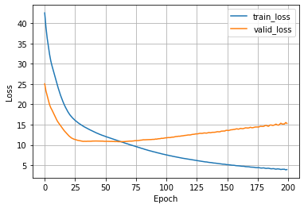
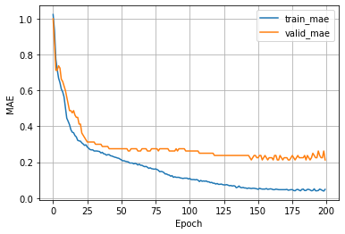

A Multilayer Perceptron for Ordinal Regression using CORN -- Cement Dataset
In this tutorial, we implement a multilayer perceptron for ordinal regression based on the CORN method. To learn more about CORN, please have a look at our preprint:
- Xintong Shi, Wenzhi Cao, and Sebastian Raschka (2021). Deep Neural Networks for Rank-Consistent Ordinal Regression Based On Conditional Probabilities. Arxiv preprint; https://arxiv.org/abs/2111.08851
General settings and hyperparameters
- Here, we specify some general hyperparameter values and general settings
- Note that for small datatsets, it is not necessary and better not to use multiple workers as it can sometimes cause issues with too many open files in PyTorch
BATCH_SIZE = 128
NUM_EPOCHS = 200
LEARNING_RATE = 0.005
NUM_WORKERS = 0
DATA_BASEPATH = "./data"
Converting a regular classifier into a CORN ordinal regression model
Changing a classifier to a CORN model for ordinal regression is actually really simple and only requires a few changes:
1)
Consider the following output layer used by a neural network classifier:
output_layer = torch.nn.Linear(hidden_units[-1], num_classes)
In CORN we reduce the number of classes by 1:
output_layer = torch.nn.Linear(hidden_units[-1], num_classes-1)
2)
We swap the cross entropy loss from PyTorch,
torch.nn.functional.cross_entropy(logits, true_labels)
with the CORN loss (also provided via coral_pytorch):
loss = corn_loss(logits, true_labels,
num_classes=num_classes)
Note that we pass num_classes instead of num_classes-1
to the corn_loss as it takes care of the rest internally.
3)
In a regular classifier, we usually obtain the predicted class labels as follows:
predicted_labels = torch.argmax(logits, dim=1)
In CORN, w replace this with the following code to convert the predicted probabilities into the predicted labels:
predicted_labels = corn_label_from_logits(logits)
Implementing a MultiLayerPerceptron using PyTorch Lightning's LightningModule
- In this section, we set up the main model architecture using the
LightningModulefrom PyTorch Lightning. - We start with defining our
MultiLayerPerceptronmodel in pure PyTorch, and then we use it in theLightningModuleto get all the extra benefits that PyTorch Lightning provides.
import torch
# Regular PyTorch Module
class MultiLayerPerceptron(torch.nn.Module):
def __init__(self, input_size, hidden_units, num_classes):
super().__init__()
# num_classes is used by the corn loss function
self.num_classes = num_classes
# Initialize MLP layers
all_layers = []
for hidden_unit in hidden_units:
layer = torch.nn.Linear(input_size, hidden_unit)
all_layers.append(layer)
all_layers.append(torch.nn.ReLU())
input_size = hidden_unit
# CORN output layer -------------------------------------------
# Regular classifier would use num_classes instead of
# num_classes-1 below
output_layer = torch.nn.Linear(hidden_units[-1], num_classes-1)
# -------------------------------------------------------------
all_layers.append(output_layer)
self.model = torch.nn.Sequential(*all_layers)
def forward(self, x):
x = self.model(x)
return x
- In our
LightningModulewe use loggers to track mean absolute errors for both the training and validation set during training; this allows us to select the best model based on validation set performance later. - Given a multilayer perceptron classifier with cross-entropy loss, it is very easy to change this classifier into a ordinal regression model using CORN. In essence, it only requires three changes:
- Instead of using
num_classesin the output layer, usenum_classes-1as shown above - Change the loss from
loss = torch.nn.functional.cross_entropy(logits, y)to
loss = corn_loss(logits, y, num_classes=self.num_classes) - To obtain the class/rank labels from the logits, change
predicted_labels = torch.argmax(logits, dim=1)to
predicted_labels = corn_label_from_logits(logits)
- Instead of using
from coral_pytorch.losses import corn_loss
from coral_pytorch.dataset import corn_label_from_logits
import pytorch_lightning as pl
import torchmetrics
# LightningModule that receives a PyTorch model as input
class LightningMLP(pl.LightningModule):
def __init__(self, model, learning_rate):
super().__init__()
self.learning_rate = learning_rate
# The inherited PyTorch module
self.model = model
# Save settings and hyperparameters to the log directory
# but skip the model parameters
self.save_hyperparameters(ignore=['model'])
# Set up attributes for computing the MAE
self.train_mae = torchmetrics.MeanAbsoluteError()
self.valid_mae = torchmetrics.MeanAbsoluteError()
self.test_mae = torchmetrics.MeanAbsoluteError()
# Defining the forward method is only necessary
# if you want to use a Trainer's .predict() method (optional)
def forward(self, x):
return self.model(x)
# A common forward step to compute the loss and labels
# this is used for training, validation, and testing below
def _shared_step(self, batch):
features, true_labels = batch
logits = self(features)
# Use CORN loss --------------------------------------
# A regular classifier uses:
# loss = torch.nn.functional.cross_entropy(logits, y)
loss = corn_loss(logits, true_labels,
num_classes=self.model.num_classes)
# ----------------------------------------------------
# CORN logits to labels ------------------------------
# A regular classifier uses:
# predicted_labels = torch.argmax(logits, dim=1)
predicted_labels = corn_label_from_logits(logits)
# ----------------------------------------------------
return loss, true_labels, predicted_labels
def training_step(self, batch, batch_idx):
loss, true_labels, predicted_labels = self._shared_step(batch)
self.log("train_loss", loss)
self.train_mae(predicted_labels, true_labels)
self.log("train_mae", self.train_mae, on_epoch=True, on_step=False)
return loss # this is passed to the optimzer for training
def validation_step(self, batch, batch_idx):
loss, true_labels, predicted_labels = self._shared_step(batch)
self.log("valid_loss", loss)
self.valid_mae(predicted_labels, true_labels)
self.log("valid_mae", self.valid_mae,
on_epoch=True, on_step=False, prog_bar=True)
def test_step(self, batch, batch_idx):
loss, true_labels, predicted_labels = self._shared_step(batch)
self.test_mae(predicted_labels, true_labels)
self.log("test_mae", self.test_mae, on_epoch=True, on_step=False)
def configure_optimizers(self):
optimizer = torch.optim.Adam(self.parameters(), lr=self.learning_rate)
return optimizer
Setting up the dataset
- In this section, we are going to set up our dataset.
- We start by downloading and taking a look at the Cement dataset:
Inspecting the dataset
import pandas as pd
import numpy as np
data_df = pd.read_csv("https://raw.githubusercontent.com/gagolews/"
"ordinal_regression_data/master/cement_strength.csv")
data_df["response"] = data_df["response"]-1 # labels should start at 0
data_labels = data_df["response"]
data_features = data_df.loc[:, [
"V1", "V2", "V3", "V4", "V5", "V6", "V7", "V8"]]
data_df.head()
| response | V1 | V2 | V3 | V4 | V5 | V6 | V7 | V8 | |
|---|---|---|---|---|---|---|---|---|---|
| 0 | 4 | 540.0 | 0.0 | 0.0 | 162.0 | 2.5 | 1040.0 | 676.0 | 28 |
| 1 | 4 | 540.0 | 0.0 | 0.0 | 162.0 | 2.5 | 1055.0 | 676.0 | 28 |
| 2 | 2 | 332.5 | 142.5 | 0.0 | 228.0 | 0.0 | 932.0 | 594.0 | 270 |
| 3 | 2 | 332.5 | 142.5 | 0.0 | 228.0 | 0.0 | 932.0 | 594.0 | 365 |
| 4 | 2 | 198.6 | 132.4 | 0.0 | 192.0 | 0.0 | 978.4 | 825.5 | 360 |
print('Number of features:', data_features.shape[1])
print('Number of examples:', data_features.shape[0])
print('Labels:', np.unique(data_labels.values))
print('Label distribution:', np.bincount(data_labels))
Number of features: 8
Number of examples: 998
Labels: [0 1 2 3 4]
Label distribution: [196 310 244 152 96]
- Above, we can see that the dataset consists of 8 features, and there are 998 examples in total.
- The labels are in range from 1 (weakest) to 5 (strongest), and we normalize them to start at zero (hence, the normalized labels are in the range 0 to 4).
- Notice also that the dataset is quite imbalanced.
Performance baseline
- Especially for imbalanced datasets, it's quite useful to compute a performance baseline.
- In classification contexts, a useful baseline is to compute the accuracy for a scenario where the model always predicts the majority class -- you want your model to be better than that!
- Note that if you are intersted in a single number that minimized the dataset mean squared error (MSE), that's the mean; similary, the median is a number that minimzes the mean absolute error (MAE).
- So, if we use the mean absolute error, , to evaluate the model, it is useful to compute the MAE pretending the predicted label is always the median:
avg_prediction = np.median(data_labels.values) # median minimizes MAE
baseline_mae = np.mean(np.abs(data_labels.values - avg_prediction))
print(f'Baseline MAE: {baseline_mae:.2f}')
Baseline MAE: 1.03
- In other words, a model that would always predict the dataset median would achieve a MAE of 1.03. A model that has an MAE of > 1 is certainly a bad model.
Creating a Dataset class
- Next, let us set up a data loading mechanism for our model.
- Note that the Cement dataset is a relatively small dataset that fits into memory quite comfortably so this may seem like overkill. However, the following steps are useful as a template since you can use those for arbitrarily-sized datatsets.
- First, we define a PyTorch
Datasetclass that returns the features (inputs) and labels:
from torch.utils.data import Dataset
class MyDataset(Dataset):
def __init__(self, feature_array, label_array, dtype=np.float32):
self.features = feature_array.astype(dtype)
self.labels = label_array
def __getitem__(self, index):
inputs = self.features[index]
label = self.labels[index]
return inputs, label
def __len__(self):
return self.features.shape[0]
Setting up a DataModule
- There are three main ways we can prepare the dataset for Lightning. We can
- make the dataset part of the model;
- set up the data loaders as usual and feed them to the fit method of a Lightning Trainer -- the Trainer is introduced in the next subsection;
- create a LightningDataModule.
- Here, we are going to use approach 3, which is the most organized approach. The
LightningDataModuleconsists of several self-explanatory methods as we can see below:
import os
from sklearn.model_selection import train_test_split
from sklearn.preprocessing import StandardScaler
from torch.utils.data import DataLoader
class DataModule(pl.LightningDataModule):
def __init__(self, data_path='./'):
super().__init__()
self.data_path = data_path
def prepare_data(self):
data_df = pd.read_csv(
'https://raw.githubusercontent.com/gagolews/'
'ordinal_regression_data/master/cement_strength.csv')
data_df.to_csv(
os.path.join(self.data_path, 'cement_strength.csv'), index=None)
return
def setup(self, stage=None):
data_df = pd.read_csv(
os.path.join(self.data_path, 'cement_strength.csv'))
data_df["response"] = data_df["response"]-1 # labels should start at 0
self.data_labels = data_df["response"]
self.data_features = data_df.loc[:, [
"V1", "V2", "V3", "V4", "V5", "V6", "V7", "V8"]]
# Split into
# 70% train, 10% validation, 20% testing
X_temp, X_test, y_temp, y_test = train_test_split(
self.data_features.values,
self.data_labels.values,
test_size=0.2,
random_state=1,
stratify=self.data_labels.values)
X_train, X_valid, y_train, y_valid = train_test_split(
X_temp,
y_temp,
test_size=0.1,
random_state=1,
stratify=y_temp)
# Standardize features
sc = StandardScaler()
X_train_std = sc.fit_transform(X_train)
X_valid_std = sc.transform(X_valid)
X_test_std = sc.transform(X_test)
self.train = MyDataset(X_train_std, y_train)
self.valid = MyDataset(X_valid_std, y_valid)
self.test = MyDataset(X_test_std, y_test)
def train_dataloader(self):
return DataLoader(self.train, batch_size=BATCH_SIZE,
num_workers=NUM_WORKERS,
drop_last=True)
def val_dataloader(self):
return DataLoader(self.valid, batch_size=BATCH_SIZE,
num_workers=NUM_WORKERS)
def test_dataloader(self):
return DataLoader(self.test, batch_size=BATCH_SIZE,
num_workers=NUM_WORKERS)
- Note that the
prepare_datamethod is usually used for steps that only need to be executed once, for example, downloading the dataset; thesetupmethod defines the the dataset loading -- if you run your code in a distributed setting, this will be called on each node / GPU. - Next, lets initialize the
DataModule; we use a random seed for reproducibility (so that the data set is shuffled the same way when we re-execute this code):
torch.manual_seed(1)
data_module = DataModule(data_path=DATA_BASEPATH)
Training the model using the PyTorch Lightning Trainer class
- Next, we initialize our multilayer perceptron model (here, a 2-layer MLP with 24 units in the first hidden layer, and 16 units in the second hidden layer).
- We wrap the model in our
LightningMLPso that we can use PyTorch Lightning's powerfulTrainerAPI. - Also, we define a callback so that we can obtain the model with the best validation set performance after training.
- Note PyTorch Lightning offers many advanced logging services like Weights & Biases. However, here, we will keep things simple and use the
CSVLogger:
from pytorch_lightning.callbacks import ModelCheckpoint
from pytorch_lightning.loggers import CSVLogger
pytorch_model = MultiLayerPerceptron(
input_size=data_features.shape[1],
hidden_units=(40, 20),
num_classes=np.bincount(data_labels).shape[0])
lightning_model = LightningMLP(
model=pytorch_model,
learning_rate=LEARNING_RATE)
callbacks = [ModelCheckpoint(
save_top_k=1, mode="min", monitor="valid_mae")] # save top 1 model
logger = CSVLogger(save_dir="logs/", name="mlp-corn-cement")
- Now it's time to train our model:
import time
trainer = pl.Trainer(
max_epochs=NUM_EPOCHS,
callbacks=callbacks,
progress_bar_refresh_rate=50, # recommended for notebooks
accelerator="auto", # Uses GPUs or TPUs if available
devices="auto", # Uses all available GPUs/TPUs if applicable
logger=logger,
deterministic=True,
log_every_n_steps=10)
start_time = time.time()
trainer.fit(model=lightning_model, datamodule=data_module)
runtime = (time.time() - start_time)/60
print(f"Training took {runtime:.2f} min in total.")
GPU available: True, used: True
TPU available: False, using: 0 TPU cores
IPU available: False, using: 0 IPUs
LOCAL_RANK: 0 - CUDA_VISIBLE_DEVICES: [0]
| Name | Type | Params
---------------------------------------------------
0 | model | MultiLayerPerceptron | 1.3 K
1 | train_mae | MeanAbsoluteError | 0
2 | valid_mae | MeanAbsoluteError | 0
3 | test_mae | MeanAbsoluteError | 0
---------------------------------------------------
1.3 K Trainable params
0 Non-trainable params
1.3 K Total params
0.005 Total estimated model params size (MB)
Training took 0.47 min in total.
Evaluating the model
- After training, let's plot our training MAE and validation MAE using pandas, which, in turn, uses matplotlib for plotting (you may want to consider a more advanced logger that does that for you):
metrics = pd.read_csv(f"{trainer.logger.log_dir}/metrics.csv")
aggreg_metrics = []
agg_col = "epoch"
for i, dfg in metrics.groupby(agg_col):
agg = dict(dfg.mean())
agg[agg_col] = i
aggreg_metrics.append(agg)
df_metrics = pd.DataFrame(aggreg_metrics)
df_metrics[["train_loss", "valid_loss"]].plot(
grid=True, legend=True, xlabel='Epoch', ylabel='Loss')
df_metrics[["train_mae", "valid_mae"]].plot(
grid=True, legend=True, xlabel='Epoch', ylabel='MAE')
<AxesSubplot:xlabel='Epoch', ylabel='MAE'>


- As we can see from the loss plot above, the model starts overfitting pretty quickly; however the validation set MAE keeps improving. Based on the MAE plot, we can see that the best model, based on the validation set MAE, may be around epoch 175.
- The
trainersaved this model automatically for us, we which we can load from the checkpoint via theckpt_path='best'argument; below we use thetrainerinstance to evaluate the best model on the test set:
trainer.test(model=lightning_model, datamodule=data_module, ckpt_path='best')
Restoring states from the checkpoint path at logs/mlp-corn-cement/version_0/checkpoints/epoch=194-step=974.ckpt
LOCAL_RANK: 0 - CUDA_VISIBLE_DEVICES: [0]
Loaded model weights from checkpoint at logs/mlp-corn-cement/version_0/checkpoints/epoch=194-step=974.ckpt
/home/jovyan/conda/lib/python3.8/site-packages/pytorch_lightning/trainer/data_loading.py:132: UserWarning: The dataloader, test_dataloader 0, does not have many workers which may be a bottleneck. Consider increasing the value of the `num_workers` argument` (try 8 which is the number of cpus on this machine) in the `DataLoader` init to improve performance.
rank_zero_warn(
Testing: 0it [00:00, ?it/s]
--------------------------------------------------------------------------------
DATALOADER:0 TEST RESULTS
{'test_mae': 0.25}
--------------------------------------------------------------------------------
[{'test_mae': 0.25}]
- The MAE of our model is quite good, especially compared to the 1.03 MAE baseline earlier.
Predicting labels of new data
- You can use the
trainer.predictmethod on a newDataLoaderorDataModuleto apply the model to new data. - Alternatively, you can also manually load the best model from a checkpoint as shown below:
path = trainer.checkpoint_callback.best_model_path
print(path)
logs/mlp-corn-cement/version_0/checkpoints/epoch=194-step=974.ckpt
lightning_model = LightningMLP.load_from_checkpoint(
path, model=pytorch_model)
lightning_model.eval();
- Note that our
MultilayerPerceptron, which is passed toLightningMLPrequires input arguments. However, this is automatically being taken care of since we usedself.save_hyperparameters()inLightningMLP's__init__method. - Now, below is an example applying the model manually. Here, pretend that the
test_dataloaderis a new data loader.
test_dataloader = data_module.test_dataloader()
all_predicted_labels = []
for batch in test_dataloader:
features, _ = batch
logits = lightning_model(features)
predicted_labels = corn_label_from_logits(logits)
all_predicted_labels.append(predicted_labels)
all_predicted_labels = torch.cat(all_predicted_labels)
all_predicted_labels[:5]
tensor([0, 3, 1, 2, 1])